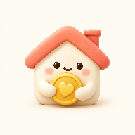

째미즈 assetKB PAY
KB 쿠팡 와우
이번 사용액과 카드사 누적액을 함께.
로그인을 확인하고 있어요.
우리 집 로그인승인액은 월 예산에, 누적액은 별도 참고값으로 표시해요.
이 폰의 KB 연결 키
KB를 지원하는 수집 앱의 KB 설정에만 붙여넣으세요. 하나 연결 키 칸에는 넣지 마세요.
키는 이 화면에서만 보여줘요. 다른 사람에게 보내지 마세요.
연결 순서
- 처음 연결할 때만 본인 계정으로 KB 전용 키를 만듭니다. 이미 연결했다면 새로 만들지 마세요.
- 앱 0.93 홈의 ‘KB 쿠팡 와우’ → ‘KB 연결 설정’에 키를 붙여넣고 ‘동의하고 KB 키 연결’을 누릅니다.
- 다음 평소 KB Pay 알림을 받은 뒤 본인 쿠팡 와우 카드인지 ‘본인 카드 확인하고 시작’ → ‘맞아요 · 시작’에서 한 번 확인합니다. 이후 지원 알림은 자동 집계합니다.
- 월 예산에서 KB 사용액과 누적액을 확인합니다.
기존 앱을 삭제하지 않고 업데이트하세요. 네 카드의 기존 키와 설정은 그대로 유지됩니다. Android 12 이상 · 실제 폰 수신 확인 대기.
이전 설치 보안 경고가 해소됐다는 뜻은 아닙니다. 다시 차단되면 보호 기능을 끄거나 우회하지 말고 중단하세요.
누적액과 수집 범위
카드사 누적액은 연체액이 포함될 수 있는 참고값입니다. PUSH만으로 연체액을 분리할 수 없어 예산에 더하거나 차액을 지출로 만들지 않습니다.
국내 일시불 승인만 수집하며 시작 전 거래·취소·할부·해외 결제는 포함하지 않습니다. 원문·가맹점·카드번호를 서버에 보내지 않습니다.